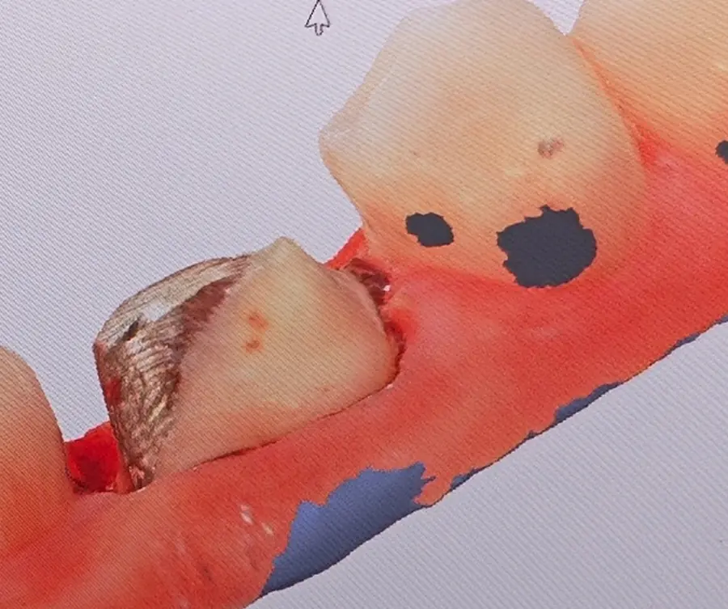
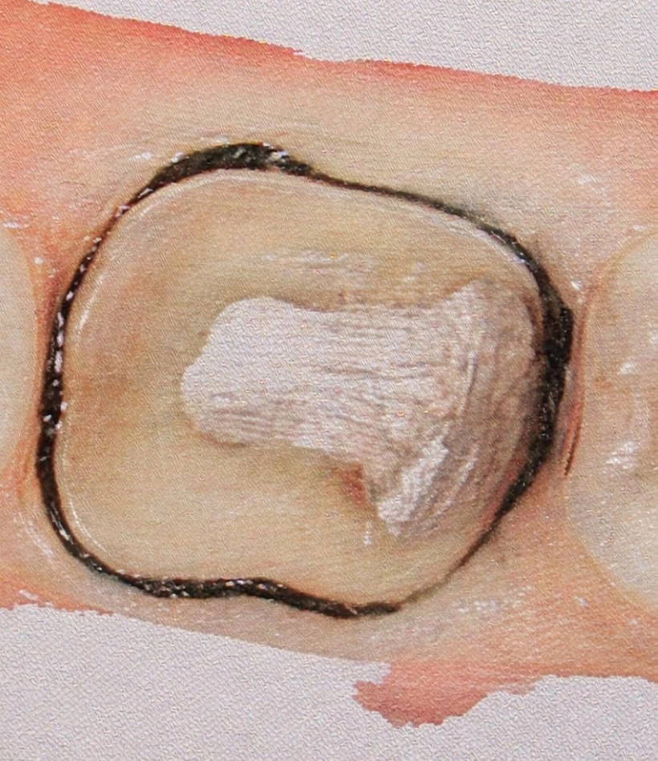

نسخه استخراجشده؛ ترجمه یا تأیید علمی انجام نشده است. وضعیت: captured
دندانی را برای قالبگیری دیجیتال آماده میکنی که سه دیوارهاش بافت طبیعی دندان است و دیوارهی چهارمش آمالگام نزدیک لثه. سمت آمالگام را هم مثل بقیه نخگذاری میکنی، یا اسکیپ میکنی و مرز را به فینیشلاین عمودی میسپاری؟

تجربهی بالینی نشان داده است که در چنین مواردی قرار دادن نخ به صورت ۳۶۰ درجه کار منطقیای نیست و بهتر است ناحیهی آمالگام را اسکیپ (Skip) کنی: دیوارههای طبیعی نخ میخورند و ناحیهی آمالگام عمداً بدون نخ میماند.
در این تکنیک فینیشلاین افقی نداریم که بخواهیم با نخ زدن لثه را کنار بزنیم تا لبهها واضحتر شوند. طراحی بر مبنای فینیشلاین عمودی پیش میرود و لابراتوار بهراحتی میتواند ناحیهای بالاتر از عمق لثه را بهعنوان مرز نهایی انتخاب کند؛ پس هیچ نیازی به خطر کردن و نخ ۳۶۰ درجه نیست.
در بسیاری از کیسها، بهویژه وقتی یکی از دیوارهها با آمالگام قدیمی یا ترمیم سابجینجیوال درگیر است، تعریف یک فینیشلاین کلاسیک و دقیق عملاً ممکن نیست. تلاش برای ایجاد chamfer یا shoulder مشخص در این شرایط اغلب یا به بیشتراشی میرسد یا به violation بیولوژیک. سایر دیوارهها میتوانند مثلاً با فینیشلاین slope shoulder استاندارد تراش بخورند؛ این دیوارهی خاص واقعیت متفاوتی دارد.

وقتی «خط» نداریم، بهجای آن محدوده تعریف میکنیم. در دیوارهای که ترمیم قدیمی تا زیر لثه امتداد یافته، تراش عمودی با فرز knife-edge بهجای تلاش برای ایجاد یک فینیشلاین مشخص، یک تصمیم آگاهانه است، نه بیدقتی.
این منطق از BOPT گرفته شده، که در آن فینیشلاین یک «خط ثابت» نیست بلکه محدودهای است که بعداً تعریف میشود. ولی اینجا صحبت از اجرای BOPT نیست؛ صحبت از قرض گرفتن منطق فینیشلاین عمودی در شرایطی است که دیواره قابل تعریف نیست. فینیشلاین عمودی اینجا یک ابزار هندسی تطبیقی است برای حفظ بافت، کنترل تراش و جلوگیری از خطای اجباری؛ و تبدیل «خط» به «محدوده» تصمیم بالینی بالغ و قابل دفاعی است.